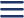

<main class="mx-auto w-app bg-white h-screen relative -z-20">
  <!-- Bg pattern -->
  <div class="absolute left-0 right-0 -z-10">
    
  </div>
  <!-- Statusbar -->
  

  <div class="flex items-center justify-between px-[31.74px]">
    
    <h1 class="font-medium text-[20px] text-text">Lab Results</h1>
    
  </div>

</main>